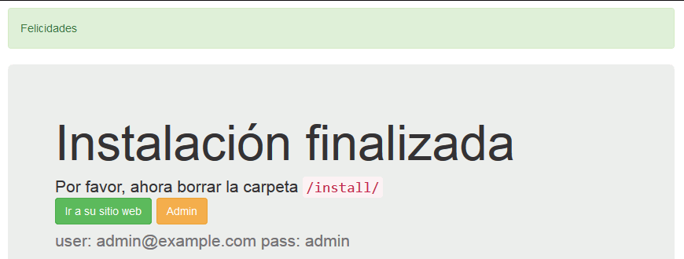
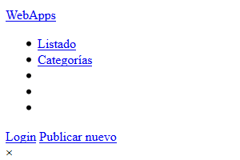
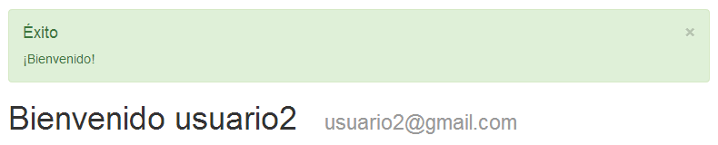
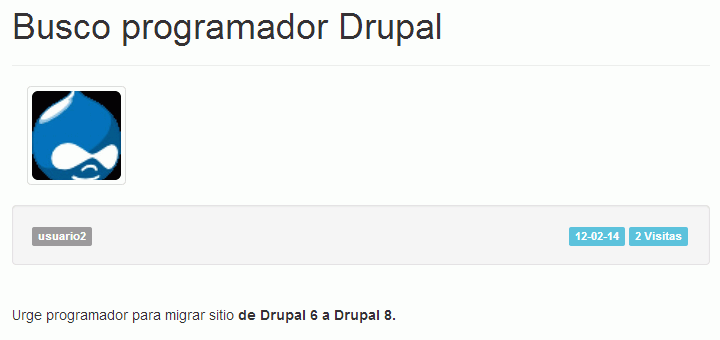
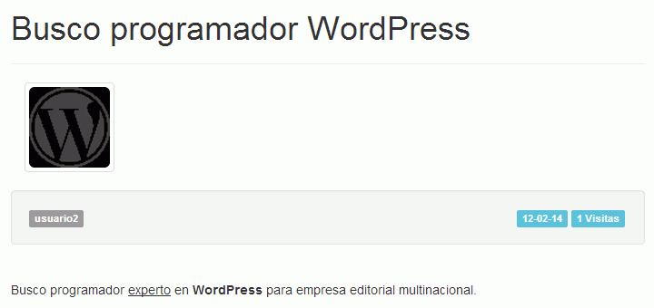
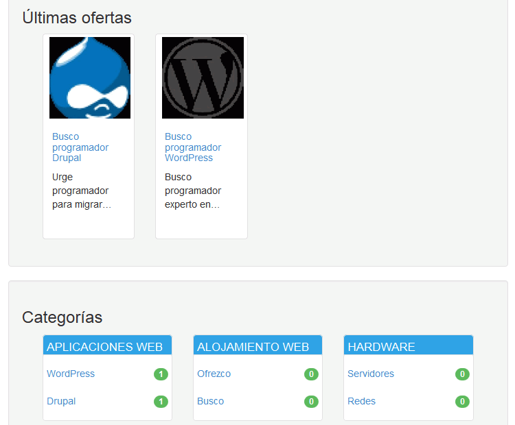
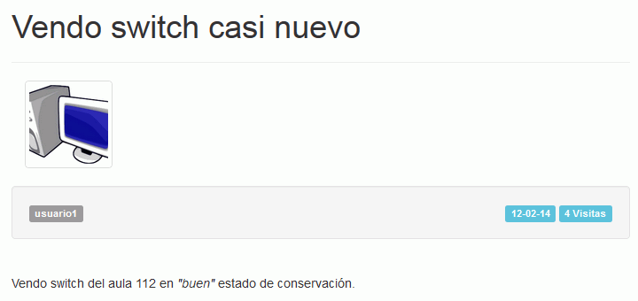
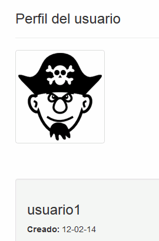
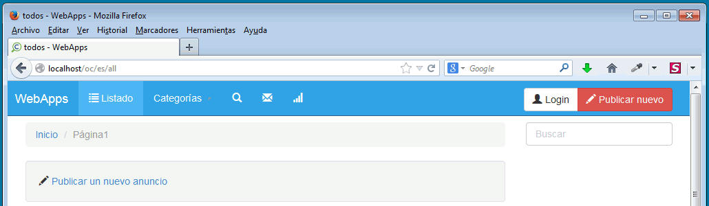
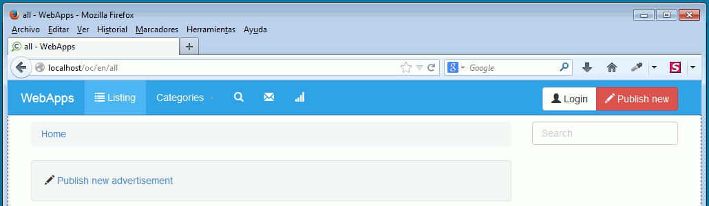

Descomprimir Open Classifieds en la carpeta openclassifieds. La aplicación deberá abrirse en el navegador con la dirección openclassifieds/index.php.
2. Instalar Open Classifeds
Entrar en phpMyAdmin como usuario root y crear un usuario de MySQL con nombre iwb_classi_1, contraseña iwb_classi_1 y base de datos iwb_classi_1.
Iniciar la instalación de Open Classifieds.
Al revisar los requisitos del sistema, OpenClassifieds indicará que es necesario realizar un cambio en la configuración de PHP. Modificar la configuración de php para poder realizar la instalación.
En la configuración del sitio:
Idioma: es_ES
Nombre del sitio: WebApps
Correo electrónico del administrador: admin@example.com
Admin Password: admin
Sin Datos de muestra
Sin Ocacu classifieds community registration
Hacer una captura de toda la pantalla confirmando la instalación:

3. Modificar la configuración de Apache
Al entrar el panel de administración de Open Classifieds, la hoja de estilo no se carga:

Corregir este problema añadiendo al final del archivo de configuración de Apache:
# 12/02/2014. Barto Añadido para OpenClassifieds
AllowEncodedSlashes On
Hacer una captura de toda la pantalla confirmando que el problema está corregido:
Escribir en un archivo de texto openclassifieds.txt por qué, en vuestra opinión, no se podía abrir la hoja de estilo y ahora sí que puede hacerse.
4. Crear categorías de anuncios
Crear las categorías de anuncios que se ven en la imagen siguiente:
Hacer una captura de toda la pantalla en la que se vea que se han registrado

6. Crear anuncios y perfil del usuario
Crear dos anuncios como usuario2:



Hacer dos capturas de toda la pantalla en las que se vea el detalle de uno de los anuncios y la vista general con los dos anuncios y las categorías.
Crear un anuncio del usuario1:

Mostrar el perfil del usuario1:

Hacer tres capturas de toda la pantalla en las que se vea el perfil, el anuncio y la vista general con los tres anuncios y las categorías.
7. Copia de seguridad
Entrar en phpMyAdmin como usuario iwb_classi_1, elegir la base de datos iwb_classi_1 y exportar la tabla con el método rápido al fichero iwb_classi_1.sql.
Una vez instalado el Open Classifieds en inglés del ejercicio 8, entrar en phpMyAdmin como usuario iwb_classi_2, elegir la base de datos iwb_classi_2 y exportar la tabla con el método rápido al fichero iwb_classi_2.sql.
8. Open Classifieds en varios idiomas
El objetivo de este ejercicio es tener dos Open Classifieds,
el que se ha instalado en los ejercicios anteriores, en español
un segundo Open Classifieds, en inglés, que se instalará en otra carpeta, con el usuario de MySQL con nombre iwb_classi_2, contraseña iwb_classi_2 y base de datos iwb_classi_2.
En el ejercicio siguiente es fácil dejar Open Classifieds inutilizable. Para que funcione, deben modificarse correctamente tanto las configuraciones de Apache como de OpenClassifieds. Tenga en cuenta que en Open Classifieds la dirección a escribir debe acabar en /.
Configurar Apache y OpenClassifieds de manera que se acceda a las dos aplicaciones mediante las direcciones:
http://localhost/oc/es

http://localhost/oc/en

Hacer dos capturas de toda la pantalla en las que se vea cada Open Classifeds (no la página general, sino el listado de
anuncios).
Si se comete el error de no escribir la / final en Open Classifieds, ya no se puede entrar en Open Classifieds. Hacerlo. ¿Cómo se podría reparar el error? Escribir en el archivo de texto openclassifieds.txt las instrucciones para corregir el problema.